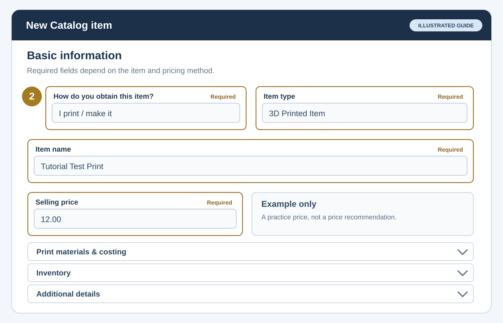
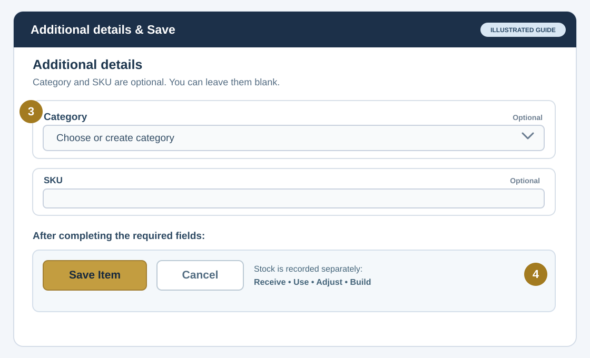

Catalog & Inventory · Getting started
Add your first Catalog item
Follow these five steps to add an item to 3D Amazing. We'll use a fictional 3D printed product in Practice so you can learn without changing your real Business.
Before you begin
Choose Practice — Sample Data or Practice — Blank from your workspace controls to learn without affecting real customers or sales. The example name Tutorial Test Print and price $12.00 below are fictional training values, not pricing advice. You can use your own test name instead.
Already working in your real Business? The same steps apply, but the item you save will be a real Catalog record. See Practice workspaces for switching and resetting guidance.
Open Catalog and select Add
From 3D Amazing, open Catalog and choose + Add. The app opens a focused dialog headed “What are you adding?”. You haven't changed any business record yet.
Choose what you're adding
For this example, choose 3D Printing. Other starting points include Handmade Products, Buy & Resell, Assembly / Gift Set, Material, Part or Supply, and Service / Labor.

Enter the required fields
The editor starts with Basic information. For a printed item that you make yourself and sell at a manual price:
- Set How do you obtain this item? to I print / make it.
- Confirm Item type is 3D Printed Item.
- Enter an Item name, for example Tutorial Test Print.
- For Manual price, enter a Selling price. Our practice example uses 12.00.

Required fields have a visible Required label, not just a colored outline. The outline adapts to the selected theme. Optional fields do not have to be filled in merely because they appear.
Add optional details if you need them
Open Print materials & costing, Inventory, or Additional details only when needed. With Manual price, a sellable printed item doesn't require print time or filament details. If you select Cost + markup, the editor requires a valid Filament / Material Catalog item and print time to calculate the price.

Under Additional details, you can choose Category → Choose or create category. You may choose No category, use an existing Category, or create one without leaving the editor. SKU, description and other details are optional where applicable.

Save your new Catalog item
Select Save Item. When the save succeeds, the app acknowledges it. You can return to Catalog and open the item to review your saved details. If validation requires more information, the editor highlights the missing field.
Adding other kinds of items
Handmade Products
Choose this for candles, soap, sewing, jewelry, laser work, pottery and other things you make. Optional costing tools help you include materials, labor, packaging and overhead.
Buy & Resell
Choose this for ready-made items you purchase. Enter the purchase cost per finished item. Even if the item is a 3D print, the app does not require your printer hours or filament weight.
Assembly / Gift Set
Build a finished item from existing Catalog components. A valid component recipe is required; Category is not required.
For complete costing and Type explanations, see Catalog & Pricing.
On iPhone or iPad
Open Catalog using the phone navigation, then choose + Add. The same starting choices and Required/Optional rules apply. Entry screens appear in a focused mobile layout, with Save Item and Cancel available in the editor footer. Scroll within the editor for Costing, Inventory, and Additional details. Do not assume the desktop and phone have identical positions for every control.
Photo coverage: Separate verified iPhone screenshots are still needed before this article can serve as a pixel-for-pixel device walkthrough.